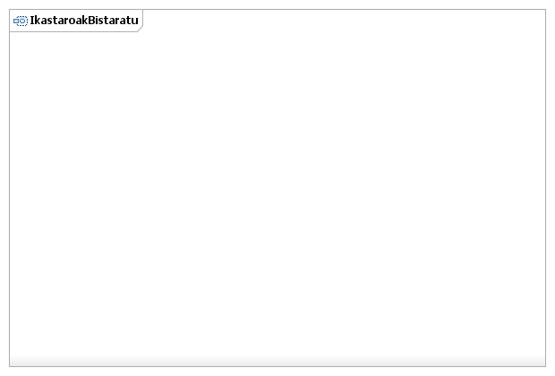

Visión general
Principio
Paquete
Elemento
Documentación UML de Lan-fluxuen kudeaketa eta trebakuntza
Erabilpen-kasuen eredua::Lan-fluxuen kudeaketa eta trebakuntza::IkastaroakBistaratu::IkastaroakBistaratu::IkastaroakBistaratu Activity Diagram
Diagrama IkastaroakBistaratu Activity Diagram

Propiedades:
Ver
Nombre
IkastaroakBistaratu Activity Diagram
Tipo
Activity Diagrama
Visión general
Principio
Paquete
Elemento
Documentación UML de Lan-fluxuen kudeaketa eta trebakuntza